地政学
リガはEUとNATOの加盟国ラトビアの首都として、バルト海、北欧、ロシア語圏の記憶が接する場所です。安全保障、エネルギー、港湾、情報空間が都市の日常にも影を落とし、市民の議論も鋭くなります。外交も近い都市です。
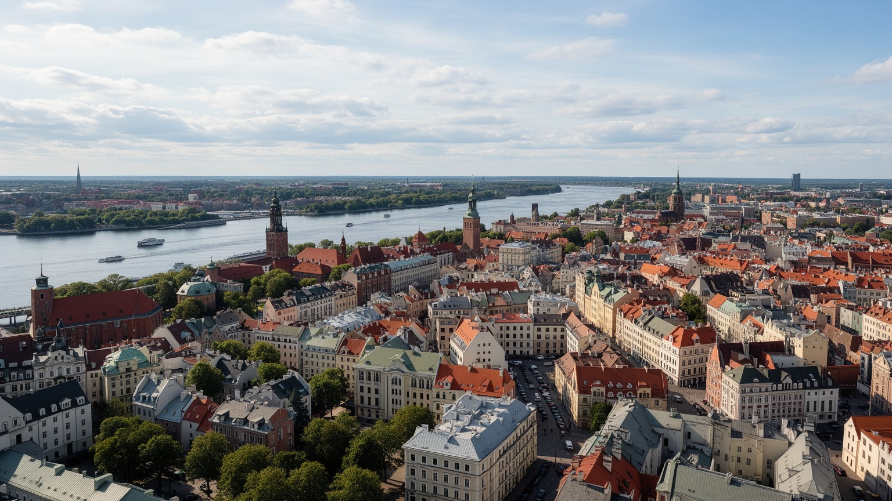
🇱🇻 ラトビア / バルト海 / World City Atlas
ハンザの港、ラトビア国家の首都、EUとNATOの東側境界に近い政治都市が、ダウガヴァ川の河口で重なります。旧市街の尖塔だけでなく、言語、記憶、住宅、港湾、若い産業を読む都市です。
都市の骨格
リガはダウガヴァ川がバルト海へ出る場所に築かれました。旧市街、中央市場、港、鉄道駅、新しい業務地区が近くに並び、ラトビアの政治、物流、観光、記憶を一つの中心へ集めます。
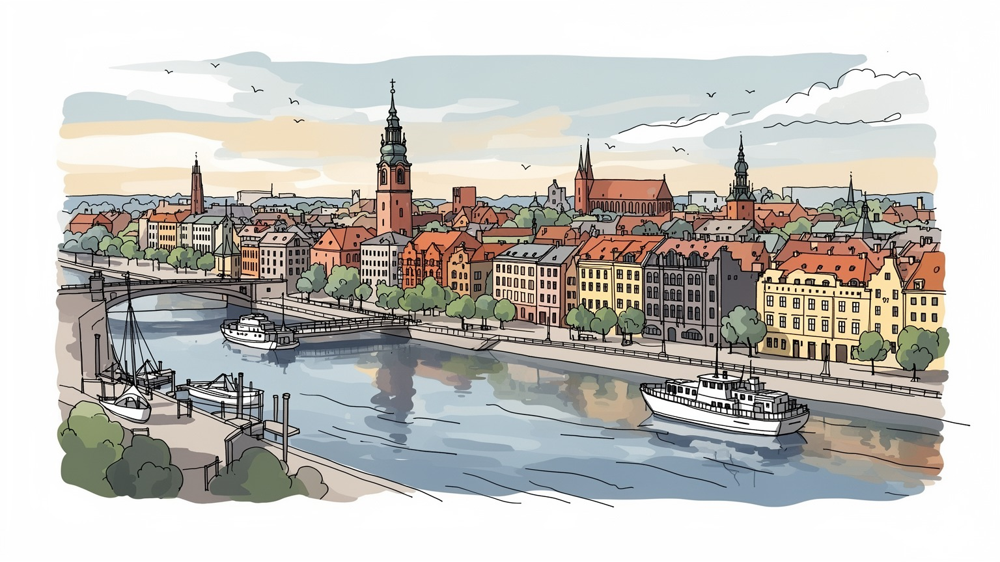
リガはEUとNATOの加盟国ラトビアの首都として、バルト海、北欧、ロシア語圏の記憶が接する場所です。安全保障、エネルギー、港湾、情報空間が都市の日常にも影を落とし、市民の議論も鋭くなります。外交も近い都市です。
港湾、鉄道、木材、食品、金融、ICT、観光、大学が経済を支えます。若い専門職、公共部門、サービス職、配達員、市場の小商いが都市を動かし、生活費と賃金差も論点です。学生の進路と食の仕事も揺れます。移動も論点です。
ルター派の教会、カトリック、正教、ユダヤ人の記憶が旧市街と郊外に残ります。ラトビア語の公共文化、合唱祭、ロシア語話者の生活、欧州的な美術教育が日常に重なります。祈りも記憶も街に残ります。
観光客は旧市街、中央市場、装飾建築を歩きます。住民には冬の暗さ、住宅改修、公共交通、言語、物価、若者流出が身近で、市場の匂い、トラム音、子どもと高齢者の移動も都市の顔です。食卓と旅の声も見えます。
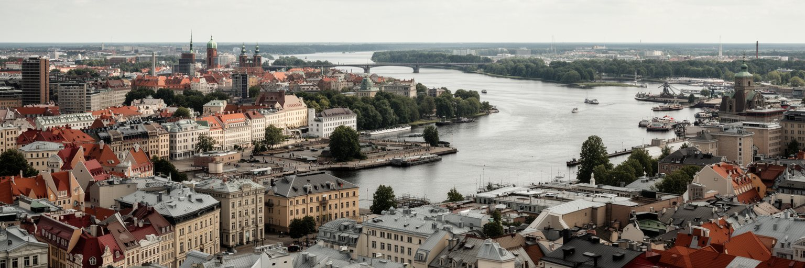
リガの地形は、ダウガヴァ川がバルト海へ流れ込む河口にあります。旧市街は川の右岸にまとまり、橋を渡ると鉄道、住宅地、工業跡地、港湾施設が連続します。水辺は観光の眺めであると同時に、穀物、木材、エネルギー、コンテナを扱う物流の場所です。川は中世から内陸と海を結ぶ道であり、ハンザ商人、ドイツ系都市文化、ロシア帝国、ソ連、独立後の欧州統合を通じて都市の役割を変えてきました。港が中心部に近いことは利点ですが、岸壁、倉庫、道路、鉄道、住宅、公共空間の使い分けを難しくします。旧市街の石畳だけを歩くと小さな観光都市に見えますが、川沿いの広いスケールを見ると、リガは国の輸出入と首都機能を引き受ける実用都市だと分かります。水は都市を開く力であり、同時に洪水、寒さ、風、産業跡地の再利用という課題も運びます。さらに河口の都市では、海へ向かう物流と住民の散歩道が近くにあり、経済と暮らしの境界が曖昧です。港湾機能を残しながら水辺を市民へ開くには、貨物車の動線、騒音、土壌、景観、観光の期待を同時に調整しなければなりません。川を中心に見ると、リガの強さと難しさが同じ線上に現れます。橋の位置や鉄道駅の向きも、住民がどの地区を近く感じるかを左右します。冬の風、貨車の音、濡れた石畳の感触も、水を越える街の骨格でもあります。
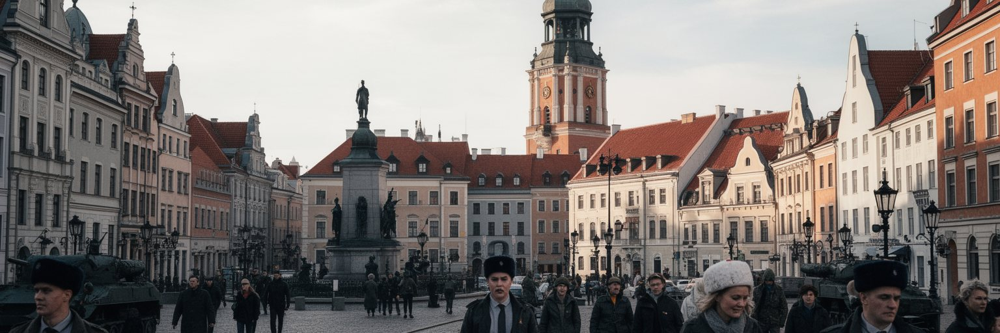
リガは人口規模だけでなく、国家の意思決定を引き受ける重さで読む必要があります。大統領府、国会、政府機関、外国公館、大学、報道機関が中心部に集まり、ラトビア語の公共空間を支えます。EUとNATOの一員であることは、リガの国際的位置を西欧へ開く一方、ロシアの侵攻、情報戦、サイバー安全保障、エネルギー依存を日常的な政治課題にします。バルト三国は小国ですが、地理的には北欧、東欧、ロシア語圏の境界に近く、首都リガはその緊張を受け止める場所です。街頭の国旗、ウクライナ支援、記念日の式典、ソ連記念物をめぐる議論は、外交を遠い話にしません。安全保障は軍事基地だけではなく、学校で使う言語、放送、港の貨物、電力網、市民の信頼にも現れます。リガの首都性は、華やかな官庁街よりも、独立を維持するための制度と記憶の密度にあります。小国の首都では、外交官、研究者、記者、市民団体の距離も比較的近く、政策論争が街の中心で見えやすくなります。防衛費や制裁の議論は、税金、公共投資、港湾収入、移民支援と結びつき、住民の生活判断にも影響します。リガは国境都市ではありませんが、境界の政治を日々引き受ける首都です。公共放送、ラジオ、SNSの速報、学校の避難訓練や記念行事まで、安全と開放性の両立を考える身近な公共の場所になります。
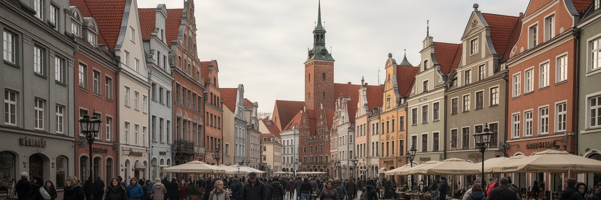
リガ旧市街は、観光パンフレットの美しい背景である前に、バルト海交易の制度が積み重なった場所です。ドーム大聖堂、聖ペテロ教会、ギルド会館、城壁の跡、広場、倉庫は、ハンザ同盟の商業、ドイツ系都市文化、宗教改革、帝国支配の層を残します。狭い路地を歩くと中世都市の輪郭が読み取れますが、現在の景観は戦争、ソ連期の管理、独立後の復元、観光経済によって再構成されています。旧市街はユネスコ世界遺産として守られる一方、夜の観光、短期滞在、店舗の入れ替わりで住民生活は薄くなりがちです。保存とは建物をきれいに残すことだけではなく、礼拝、商店、学校、住まい、公共交通が残ることでもあります。リガの旧市街を読むと、欧州らしい美観の裏に、誰の記憶が中心に置かれ、誰の生活が観光へ置き換わるのかという問題が見えます。石畳は過去の舞台であり、現在の都市政策の試験場でもあります。中世の商業都市は、国民国家より古い自治と商人のネットワークを持っていました。そのため旧市街には、ラトビア国家の物語だけでは収まらないドイツ語圏、北欧、ロシア帝国の記憶が残ります。観光客が歩く広場には、カフェ、土産店、夜のバー、ストリート演奏も集まり、複数の支配と復元の結果として今の公共空間が使われています。美しさの背後にある生活費と騒音を読むほど、旧市街は単なる名所ではなくなります。
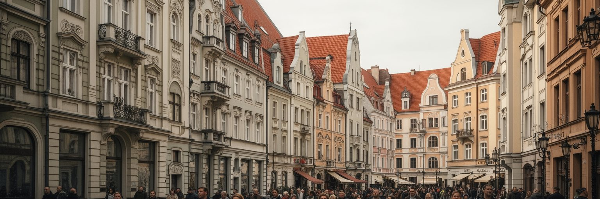
リガの都市景観を特徴づけるのは、旧市街だけではありません。中心部の外側には、顔の彫刻、植物文様、曲線、幾何学模様が並ぶアールヌーボー建築が密集し、二十世紀初頭の成長と市民階層の野心を伝えます。さらに郊外には木造住宅、庭、低層街区が残り、石造の中心とは違う生活の記憶を持っています。こうした建築は、写真映えする装飾として消費されやすい一方、維持費、断熱、防火、所有権、修復技術という現実的な問題を抱えます。空き家や劣化した木造家屋は都市の弱さに見えますが、丁寧に再生すれば大量の解体を避け、地域の歴史を保つ資源になります。リガの美しさは、均質な古都ではなく、商業都市の富、帝国期の都市計画、木造の生活圏、ソ連期の住宅地が隣り合う点にあります。建築を眺めるだけでなく、誰が修復費を払い、誰が住み続けられるかを見ると、景観は社会政策として見えてきます。装飾建築の保存は中心部のブランドを高めますが、家賃上昇や事務所化が進むと、建物は生活から離れます。木造街区の改修も、文化財としての価値と住民の負担をどう両立させるかが問われます。リガの建築は、過去の様式を並べた博物館ではなく、更新費用と居住権をめぐる現在の交渉の場です。古い窓や階段を残す選択は、景観だけでなく職人技術を残す選択でもあります。小さな修復が積み重なるほど、都市は急な再開発に頼らず更新できます。
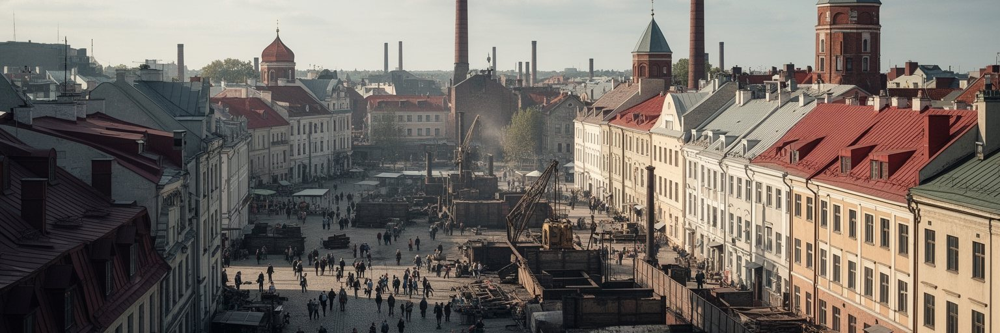
リガ経済は、港湾と鉄道の古い物流機能に、金融、ICT、木材加工、食品、観光、大学、公共部門が重なって成り立ちます。ラトビアの人口と所得の大きな部分が首都圏に集中するため、リガは国内の機会を集める都市であると同時に、地方から人材を吸い上げる都市でもあります。若い専門職は英語、ラトビア語、デジタル技能を武器に国際企業やスタートアップへ向かいますが、賃金は西欧大都市ほど高くなく、住宅費や物価上昇の影響を受けます。観光、飲食、ホテル、清掃、介護、交通の仕事は、都市の表面を支える一方で、季節性や低賃金の不安を抱えます。港湾は東西物流の変化に敏感で、制裁、エネルギー転換、ロシア向け貨物の縮小が雇用に影響します。リガの産業を見るには、成長するITだけでなく、古い工業跡地、公共サービス、夜間労働、若者の国外移動まで同じ地図に置く必要があります。首都の成功は、人が残れる賃金と住まいを作れるかで試されます。ラトビア大学や職業教育は新しい技能を育てますが、卒業後にベルリン、ロンドン、北欧へ移る若者も少なくありません。企業誘致だけではなく、保育、交通、医療、文化施設、手頃な住居を整えなければ、人材は根づきません。市場の売り子、配達員、夜の音楽店の働き手も、国際化と人口減少が同時に進む首都の実験場を支えます。公共部門の賃金や医療職の確保も重要で、成長産業と基礎サービスの均衡が問われます。
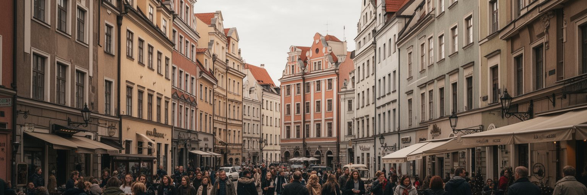
リガの社会を理解するには、言語を避けて通れません。ラトビア語は独立国家の公共語であり、学校、行政、放送、街路名、記念式典を通じて国家の回復を支えます。一方、ソ連期の移住と産業化によってロシア語話者の大きなコミュニティが形成され、家族、職場、店、メディアのなかで複数の言語が聞こえます。これは単純な対立ではなく、世代、国籍、教育、仕事、政治的記憶が絡む生活の論点です。独立、占領、強制移住、第二次世界大戦、ホロコースト、ソ連崩壊、EU加盟の記憶は、記念碑、博物館、学校教育、家庭の語りで異なる重みを持ちます。ウクライナ侵攻後は、安全保障と情報空間の論点がさらに強まりました。リガの多言語性は観光的な多様性ではなく、誰が公共空間に参加し、どの記憶が正当に扱われるかを問う制度の問題です。日常の挨拶、学校選択、メディアの選び方までが、国家と都市の関係を映します。若い世代ほど英語を使う場面も増え、国際企業や大学では三つの言語が交差します。しかし公共制度でどの言語が求められるかは、就職、医療、行政手続きへのアクセスを左右します。言語政策は抽象的な理念ではなく、住民が都市に参加できるかどうかを決める入口です。多言語の経験を排除ではなく橋渡しにできれば、リガは小さな市場を越えて人材を集めやすくなります。信頼を作るには、国家語の尊重と生活上の支援を同時に進める必要があります。
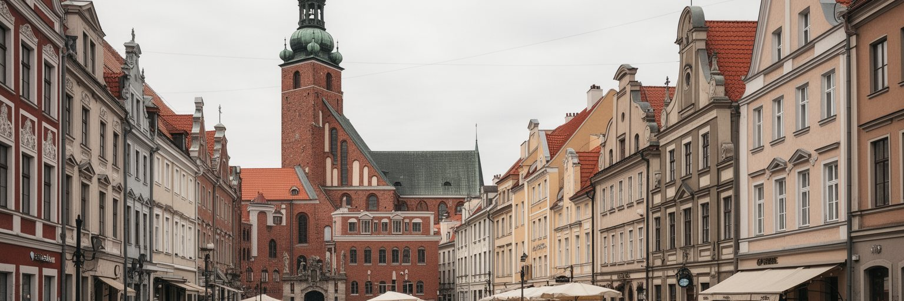
リガの宗教地図は、バルト海交易と帝国支配の歴史を反映します。旧市街のルター派教会はドイツ系都市文化と宗教改革の記憶を持ち、カトリック教会、正教会、ユダヤ人の記念施設も市内の別の層を示します。尖塔は観光名所ですが、礼拝、合唱、葬儀、祝祭、慈善、地域の相談を通じて、宗教施設は今も生活の場所です。リガにはホロコーストと戦時占領の重い記憶もあり、ユダヤ人共同体の歴史は建物の保存だけでなく、失われた人々をどう記憶するかという論点を含みます。正教会はロシア語話者の生活と結びつく場合もありますが、政治的な単純化だけで見ると信仰の実態を見誤ります。宗教は民族、言語、国家への帰属と重なりながらも、家族の儀礼や地域支援として根づいています。リガを歩くと、聖堂の音、墓地、記念碑、合唱文化が、都市の静かな公共性を作っていることが分かります。宗教景観は過去の飾りではなく、共同体の傷と支えを保存する器です。歌と踊りの祭典や夏至のヤーニは世俗的な国家行事としても重要で、その声の文化は教会音楽、学校の合唱、地域共同体ともつながっています。観光客が聖堂を音響の名所として訪れる一方、住民にとっては追悼、祈り、世代間の記憶を結ぶ場所です。リガの宗教を読むことは、信仰と国民文化の境界を丁寧に見ることでもあります。宗教施設が観光化されるほど、静かな祈りと保存費用のバランスも難しくなります。
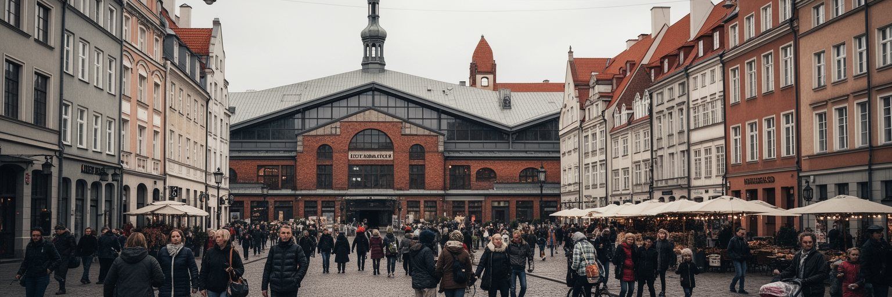
リガの日常は、旧市街の外にある中央市場、トラム、バス、団地、学校、川辺の散歩、冬の暗い通勤にあります。飛行船格納庫を転用した市場は観光客にも人気ですが、燻製魚、黒パン、乳製品、野菜、蜂蜜、花、保存食を買う住民の生活空間でもあります。冷涼で曇りがちな気候は、冬の光、暖房費、道路の凍結、公共交通の待ち時間を生活の一部にします。人口減少と高齢化が進む国で、リガには若者、学生、地方出身者、外国人労働者が集まる一方、家族の国外移住や単身高齢者の孤立も見えます。ソ連期の集合住宅地はしばしば単調に見られますが、実際には学校、店、診療所、遊び場、近所づきあいを含む生活の単位です。中心部のカフェやIT職だけでは、都市の厚みは分かりません。市場で何が買われ、トラムがどこへ走り、冬に誰が暖かい住まいを確保できるかを見ることで、リガの暮らしは立体的に見えます。日常の強さは、観光地から少し離れた公共サービスにあります。公共交通は中心と郊外を結ぶ重要な生活線ですが、人口密度が下がる地区では便数や維持費が課題になります。医療、保育、学校、地域センターへの行きやすさは、車を持たない高齢者や学生にとって特に重要です。子どものスポーツ教室、アイスホッケーやバスケットボールの応援、週末の買い物も、統計より早く生活の変化を知らせます。
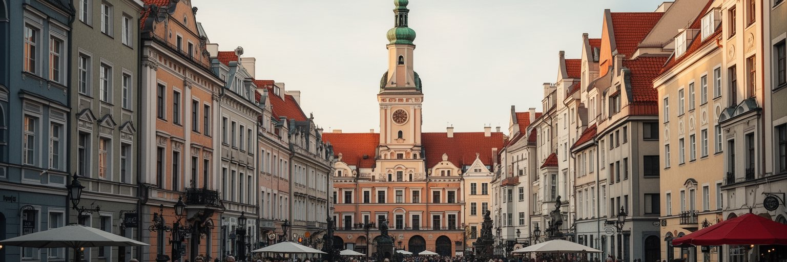
リガ観光の中心は、旧市街、ドーム大聖堂、聖ペテロ教会、中央市場、アールヌーボー地区、川辺の眺めです。コンパクトに歩けるため短期旅行に向き、バルト三国周遊の入口にもなります。ただし観光の強さは、都市の弱さにもつながります。旧市街に宿泊施設と飲食店が集中すると、住民向けの店は減り、夜間騒音や短期賃貸の論点が出ます。歴史的建物の保存には費用がかかり、観光収入が必ず修復や住宅維持へ回るとは限りません。世界遺産の価値を守るには、外観の美しさだけでなく、生活者が中心に残れる条件を整える必要があります。観光客にとっては、尖塔を眺めるだけでなく、中央市場、木造街区、戦争と占領の博物館、郊外住宅地まで足を伸ばすことで、リガの全体像に近づけます。遺産管理は過去を凍結する作業ではなく、現在の住民、事業者、交通、気候対策の要求を調整する仕事です。リガの魅力は、保存された古都と生きている首都の緊張にあります。航空便やクルーズが増えるほど、短時間で消費される都市になりやすい点にも注意が必要です。土産店、ベーカリー、ショッピングセンター、夜のライブバーだけが増えると、歴史地区は便利でも浅い空間になります。ゆっくり滞在し、公共交通で周辺を歩く観光のほうが、地域経済と住民生活の両方に利益を残しやすくなります。観光を広げる先は、住民の日常を尊重して学べる場所であるべきです。
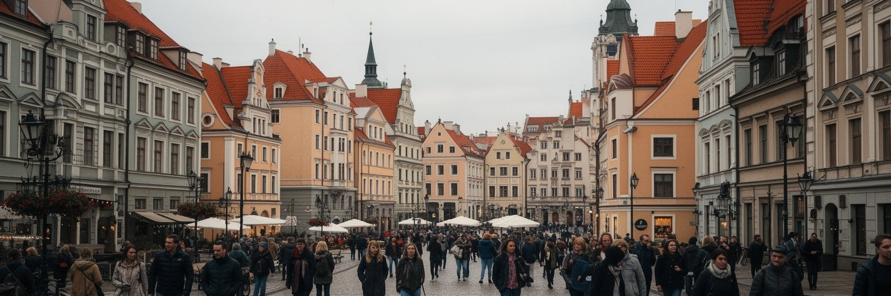
リガの気候は北欧ほど極端ではありませんが、冬の寒さ、曇天、湿気、河口部の風は暮らしに強く影響します。古い木造住宅やソ連期の集合住宅では、断熱、暖房効率、配管、エレベーター、公共空間の老朽化が生活費と健康を左右します。エネルギー価格が上がると、住宅の質の差はそのまま家計の差になります。川と運河が近い都市では、洪水、排水、岸辺の再開発、緑地の保全も重要です。気候対策は新しい自転車道や公園だけでなく、古い住宅をどう直し、低所得世帯を取り残さずに省エネ化するかにかかっています。港湾や工業跡地の再利用では、土壌、交通、雇用、景観を同時に考える必要があります。リガの都市更新は、きれいな中心部を広げるだけでは不十分です。郊外団地、木造街区、市場周辺、川辺の公共空間がつながってこそ、人口減少時代にも住み続けられる首都になります。寒さへの備えは、都市の公平性を測る身近な指標です。夏の暑さも無視できなくなり、日陰、街路樹、換気、涼める公共空間の価値が高まっています。気候適応は大きな堤防だけでなく、階段のない停留所、暖かい図書館、修繕された屋根、浸水時に分かりやすい情報にも現れます。小さな改修を積み重ねる都市ほど、人口が減っても暮らしの質を守れます。省エネ改修を住民負担だけに任せると、弱い世帯ほど寒い家に残されます。都市更新は福祉政策でもあります。
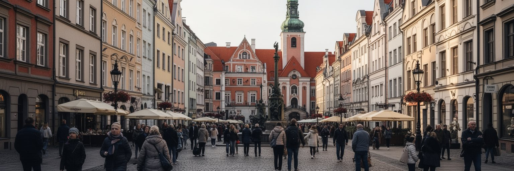
リガは、大都市の規模ではなく、境界を背負う密度で重要な都市です。ハンザの商業都市、ドイツ系文化、ロシア帝国、ソ連、独立回復、EUとNATO加盟が、短い距離のなかに重なります。旧市街の美しさ、アールヌーボーの装飾、中央市場のにぎわい、港湾の実務、ラトビア語の公共空間、ロシア語話者の生活、ウクライナ支援の旗、冬の団地が一つの都市を作ります。経済規模だけで見ればリガは世界の巨大都市ではありませんが、国家の人口、雇用、文化、外交を大きく引き受ける首都です。その集中は機会を生む一方、地方との格差、住宅改修、若者流出、言語と記憶の緊張も強めます。リガを読むことは、小国の首都がどのように欧州の中心へつながり、同時に東側境界の不安を抱えるかを読むことです。尖塔と石畳の都市という印象の奥には、独立を守りながら生活を更新し続ける現代都市の努力があります。旅行者には歩きやすい古都に見えても、住民にとっては賃金、言語、住宅、冬、公共サービスが毎日の判断材料です。港と市場、聖堂と団地、官庁と木造街区を結んで見ると、リガは静かな観光都市ではなく、欧州の端で国家と暮らしを調整する働く首都として立ち上がります。だからリガの価値は、世界的な規模ではなく、歴史と安全保障と生活が近距離で交差する読みごたえにあります。小ささは弱さだけでなく、都市の関係を観察しやすくする強さでもあります。